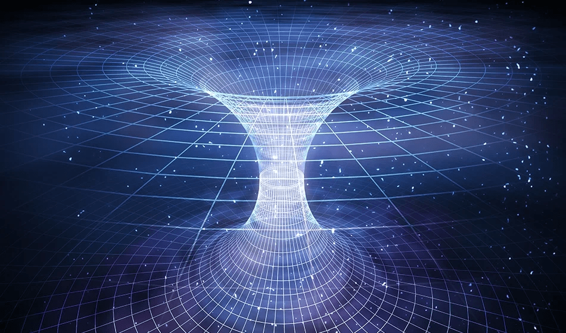

Quantic Gravity & Unified Theory
Field theory and the Standard Model, although having revolutionized our understanding of the quantum world, fail to explain a crucial element: gravity. This fundamental force, at work on the macroscopic and cosmological scale, has long escaped a unified description with the other forces of nature. The quest for a quantum theory of gravity and a unified theory is at the heart of the most ambitious research in modern physics.
Quantic Gravity: A bridge between general relativity and quantum mechanics
Quantum gravity strives to reconcile two pillars of modern physics: Einstein's theory of general relativity, which describes gravity on a macroscopic scale, and quantum mechanics, which governs the microscopic world. Two main approaches dominate this field:
- String theory: This theory proposes that elementary particles are not dimensionless points, but rather tiny vibrating strings. The nature of the vibration determines the type of particle.
- Spin loops: This approach seeks to quantify the geometry of space-time itself, using mathematical structures called "spin networks".
Unified Theory: Unifying all the forces of nature
The ultimate ambition is to find a unified theory capable of describing not only quantum gravity, but also the Standard Model, thus bringing together all the forces of nature within a coherent framework. Among the promising candidates, we find:
- M-Theory: An extension of string theory that proposes the existence of 11 space-time dimensions.
- Supergravity: A theory that combines general relativity with supersymmetry, a symmetry postulating the existence of supersymmetric particles for every known particle.
Challenges and perspectives
The quest for a quantum theory of gravity and a unified theory faces significant challenges:
- Lack of experimental evidence: Most candidate theories have not yet been confirmed experimentally, making it difficult to validate their predictions.
- Mathematical complexity: The mathematical formulations of these theories are extremely complex, making their analysis and experimental testing particularly difficult.
Despite considerable obstacles, the search for a unified theory and a quantum theory of gravity remains a fundamental challenge in modern physics. Its realization would not only allow us to better understand the universe at all scales, but also open the way to potentially revolutionary discoveries, both on a physical and philosophical level.
This fascinating journey to the frontiers of knowledge invites us to push the limits of our understanding of the universe and to imagine new, unsuspected perspectives. The exploration of these theories, although fraught with pitfalls, promises to enrich our view of the world and bring us closer, perhaps one day, to a truly holistic understanding of nature and its mysteries.